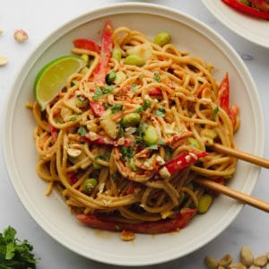

Peanut Noodles

These Thai Peanut Noodles are affordable, easy and ready to eat in just 15 minutes
Ingredients
Peanut Sauce
- 1/2 cup natural peanut butter
- 1/2 cup water
- 1/4 cup low sodium soy sauce or tamari for gluten free
- 2 cloves garlic, minced
- 2 tablespoons fresh lime juice or rice vinegar
- 3 tablespoons agave or brown sugar
- 1 teaspoon Sriracha hot sauce
Everything else
- 8 ounces spaghetti noodles or rice noodles
- 1 cup shelled edamame
- 1/2 cup chopped cucumbers
- 1 cup shredded carrots
- 1 red bell pepper, seeded and thinly sliced
- 2 green onions, chopped
- 1/4 cup chopped cilantro
- 1/4 cup chopped peanuts
Steps
- Make the peanut sauce: In a small/medium bowl. whisk together all sauce ingredients until smooth, Set aside.
- Prepare the noodles: Cook your noodles of choice according to the package instructions, then drain
- Combine: To a large bowl, add the cooked noodles, along with the edamame, vegetables and peanuts. Pour in the peanut sauce and stir well. Serve immediately with lime wedges, hot sauce, more chopped peanuts and cilantro, as desired. Enjoy!